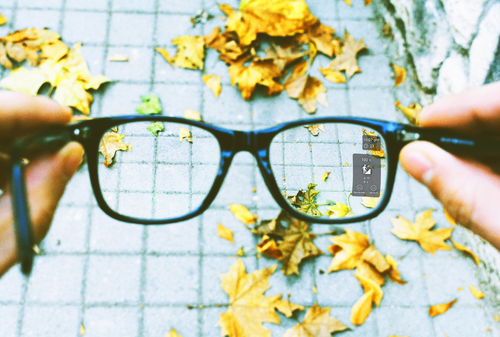
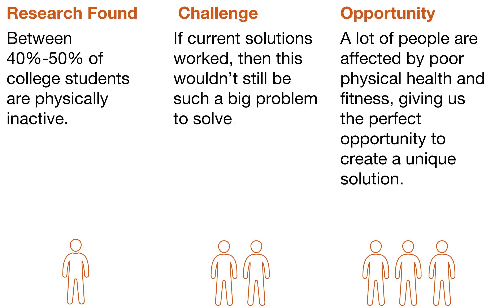
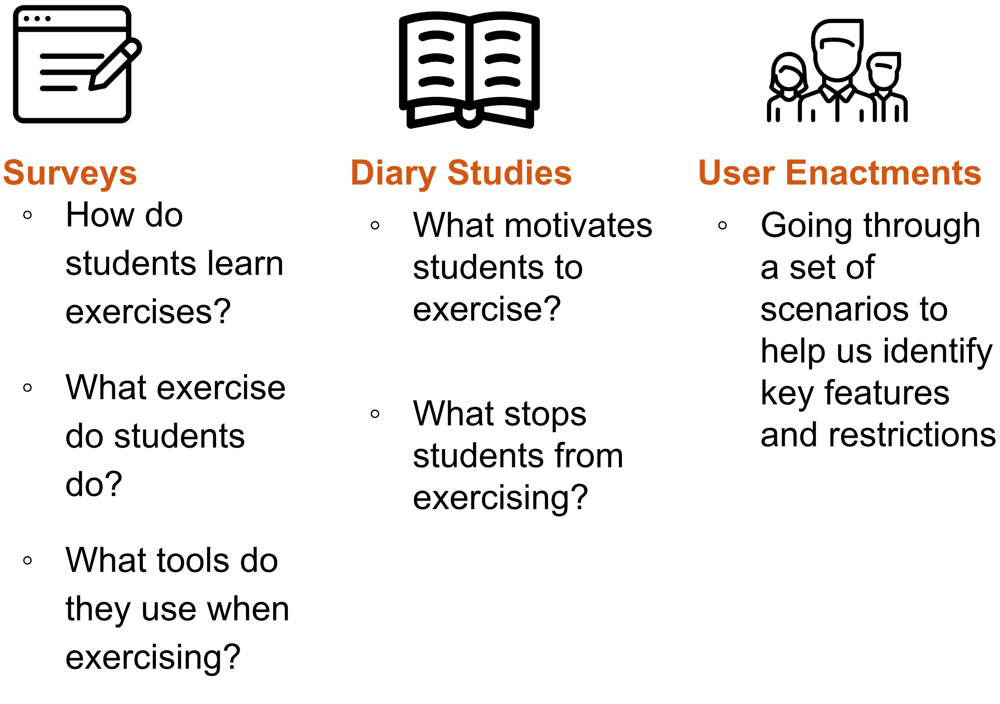
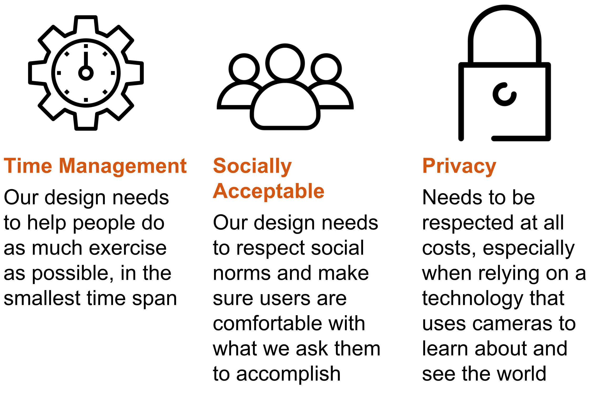
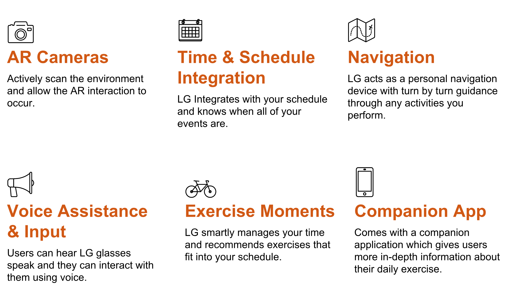
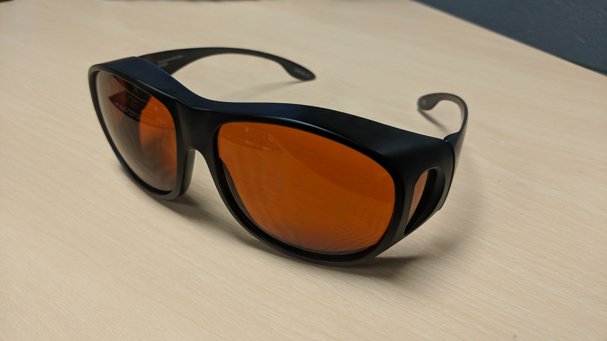
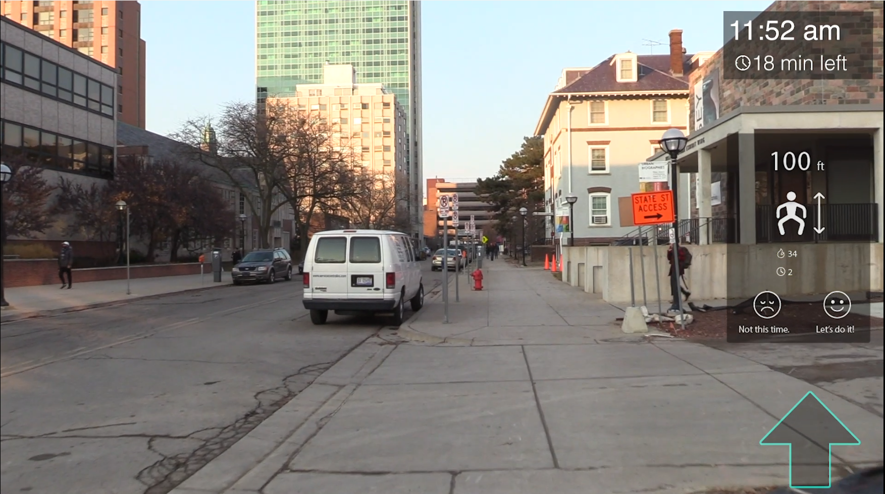
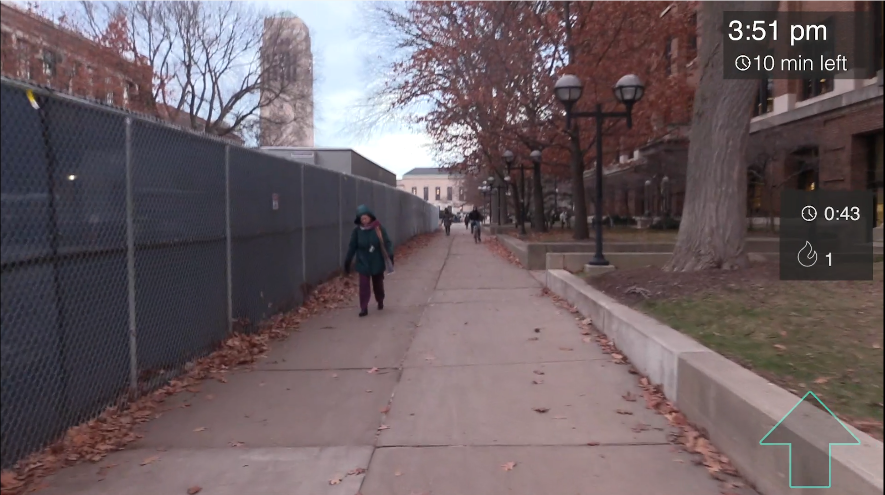
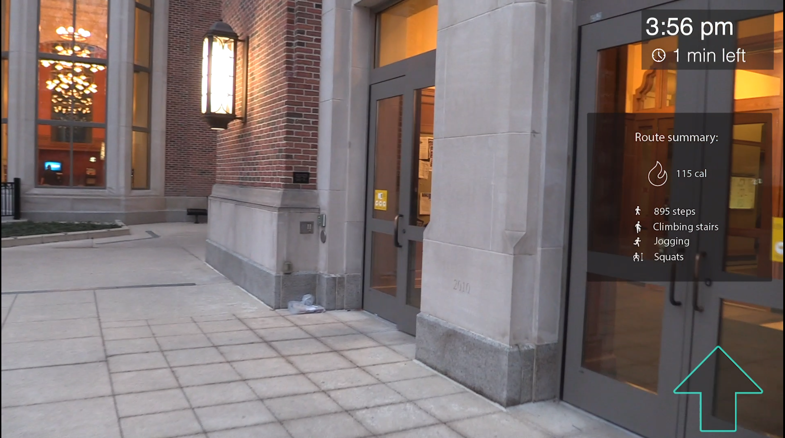
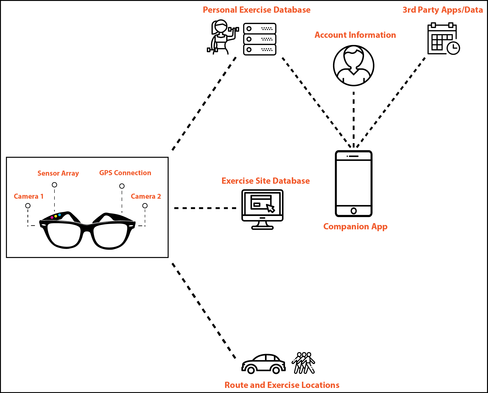

Introduction to Milestone 5
This milestone summarizes the work we've done to create the Life as a Gym concept.
Product Description

“Life as a Gym: Smart Glasses that encourage exercise in a busy life through thoughtful time management and deep understanding of one’s lifestyle.”
Our product, Life As a Gym (LG), is an innovative method to encourage University students to add more exercise into their already-filled lives. LG glasses are enhanced with augmented reality that scans a user’s environment for ad-hoc exercise opportunities, such as stairs to climb, places to jog, etc. LG glasses then inform their users to these exercise opportunities, and guides the users to them. LG manages these ad-hoc opportunities to the users’ schedule, giving them the confidence to exercise, knowing that they will still make it to their next stop on time.
Motivations

Our motivation for creating LG is a combination of several different factors. Prior to deciding to go with Life as a Gym glasses as our concept, we conducted background research in various topics; one of the statistics we found was approximately 40-50% of all college students do not get the recommended amount of physical activity, that is, they do not do enough physical activity in a given day to constitute exercise from a medical perspective. This statistic was a driving force throughout our project, and stuck with us as one of our key motivations throughout the course. This statistic was found out after we completed the majority of the course work, but we found it was a good justification that helped validate our design and concept.
Key Insights
Formative Study
To develop our initial design concept into prototype-worthy status, we developed and executed a research plan, broken down into the following study breakdowns:
Key Insights
Final System Concept
Key Features
Demonstration Video
Prototype Stills




Ideal System Proposal
Life as a Gym (LG) is an AR-based service that can fit exercise opportunities into users’ daily schedule through a pair of smart glasses. Through cameras, sensors and GPS technology, LG can scan our daily environment, guide users to their destination, and recommend exercise opportunities along the way. Users can interact with LG through the glasses and a companion app. The data collected by the glasses and inputted from the mobile app would be stored in databases. There will also be a database for exercise sites that LG can access and provide recommendations based on the data it has.
Reflection
Design Limitations
Based on our user enactments, we realized that there are some issues when using LG in social settings. When users are hanging out with friends, they don’t want LG to get in the way of their social experience. So far as we know, users will only use LG when all of their friends use LG as well.
We also did not explore any elements of gamification in our prototype. This is an area ripe for user engagement and asynchronous social interaction, and really should be explored in further prototypes.
Finally, our UI design most likely has limits for visibility against some backdrops and in low-light conditions. We also realize that our design does not support the visually-impaired well, as it does assume functional eyesight in order to perform its functions.
Next Steps
The first, and more obvious thing that we should do is carry out a new set of user studies with our full prototype, to assess whether or not the product still remains a viable concept, and what other features need to be added.
An additional step is to further enhance the user interface and user interactions to be even higher fidelity. As an example, we would really like LG to overlay colored lines directly over the correct path in the live environment, rather than using a simple navigation arrow to indicate direction.
Finally, we would like to further research computer vision to understand more about how LG could actually scan the environment to find exercise opportunities. Our current understanding is that the computer vision required to actually implement LG does not yet exist, but we could gain a greater understanding of when implementation might be possible.
Prototype Construction Insights
Through the prototyping process, we learned that making strong contrast of UI elements from the real environment view can make it much easier for users to see and interact with LG. Due to this, we adjusted the transparency of the UI background multiple times to find the right balance. Additionally, we found that our initial UI obscured too much of the user’s vision, thus cutting off the users situational awareness. To alleviate this, we placed almost all UI elements on the right side of the view. We also found that notifications could be too easily ignored by users if only visual components were used. Therefore, we added an auditory element to the notifications.